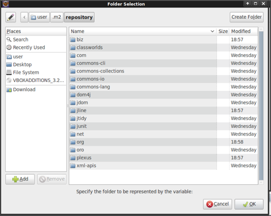
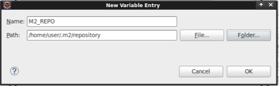

Contents
Esta seção vai cobrir os passos para criação da estrutura inicial do projeto e ambiente de desenvolvimento. Para facilitar este tutorial, vamos utilizar uma máquina virtual baseada na distribuição OSGEO Live DVD.
Abra o console de comandos da estação e crie a pasta do projeto:
$ mkdir ~/geodojo
$ cd geodojo
Utilizando o software maven vamos criar um novo projeto maven através do plugin archetype:
$ mvn archetype:generate
$ Choose a number:83
$ Choose a number: 1
$ Define value for property 'groupId': org.latinoware.geodojo.app
$ Define value for property 'artifactId': : geodojo
$ Define value for property 'version': 1.0-SNAPSHOT:
$ Define value for property 'package': org.latinoware.geodojo.app:
Confirm properties configuration:
groupId: org.latinoware.geodojo.app
artifactId: geodojo-app
version: 1.0-SNAPSHOT
package: org.latinoware.geodojo.app
$ Y: Y
Com o projeto maven criado, chegou a hora de montarmos o projeto na IDE Eclipse.
A partir do plugin do maven(mojo) vamos criar o nosso projeto WTP do eclipse:
$ cd geodojo-app/
$ mvn -Dwtpversion=1.5 eclipse:eclipse
Vamos importar o projeto do eclipse que foi criado pelo maven. Para tal devemos acionar:
File >> Import... >> General >> Existing Projects in Workspace >> Next
Note que o projeto geodojo-app deve aparecer na listagem de projetos. Em seguida Finish. A partir deste momento o nosso ambiente de desenvolvimento está pronto para edição.
Caso o projeto apresente erros do tipo Unbound classpath variable: ‘M2_REPO/junit/junit/3.8.1/junit-3.8.1.jar’ in project ‘geodojo-app’
Será preciso configurar a variavel M2_REPO para que o eclipse encontre os arquivos jars que o maven baixou para o seu repositorio local(~/.m2)
Selecionar o projeto >> botão direito >> Properties >> Java Build Path >> Libraries >> Seleciona qualquer jar na listagem >> Edit >> Variable >> New
Preencher os dados da variavel M2_REPO e apontar para o diretorio ~/.m2/repository que é o local padrão onde o maven deposita os jars baixados
 Para finalizar esta etapa, vamos executar o programa no servidor de aplicação Tomcat:
Click direito no projeto >> Run As >> Run on Server
Finalizar a configuração e verificar a execução da aplicação
Se tudo estiver correto a pagina inicial Hello World! deverá aparecer.
Encerramentos este modulo do minicurso. No próximo módulo iremos abordar o banco de dados espacial Postgis assim como preparar a base de dados para aplicação.
{kind=link}
{kind=link}
{kind=link}
{kind=link}
{kind=link}
{kind=link}